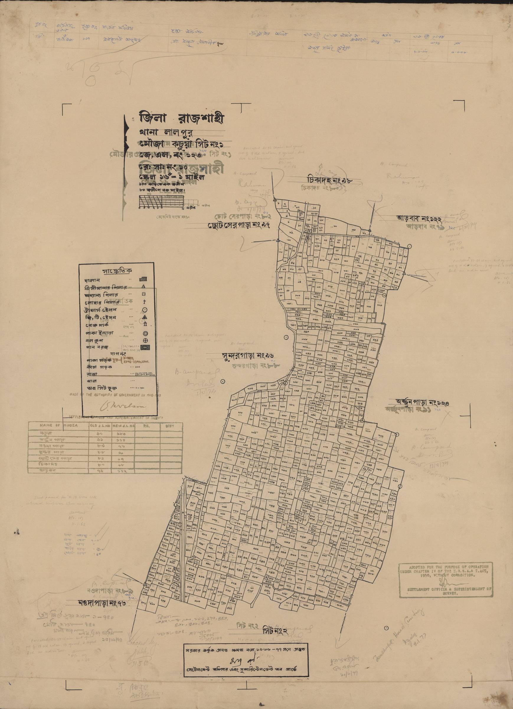
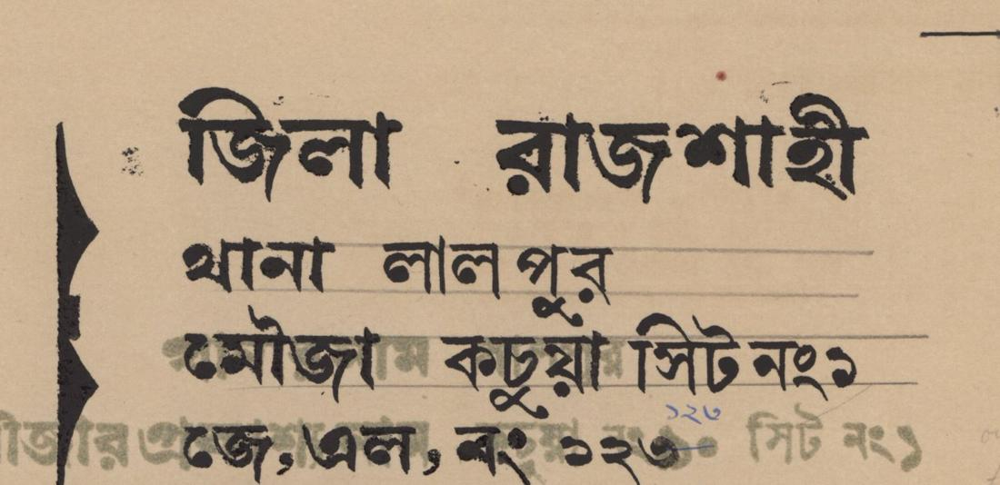
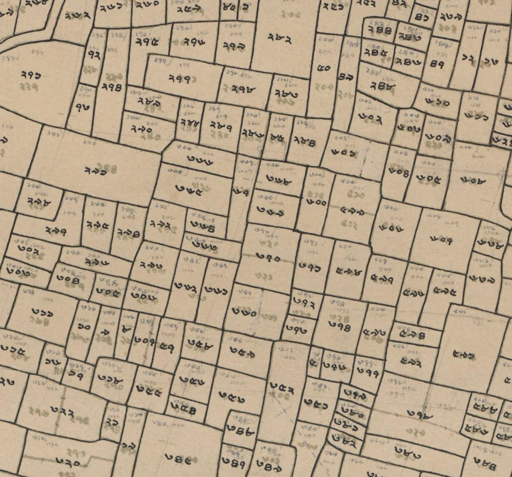
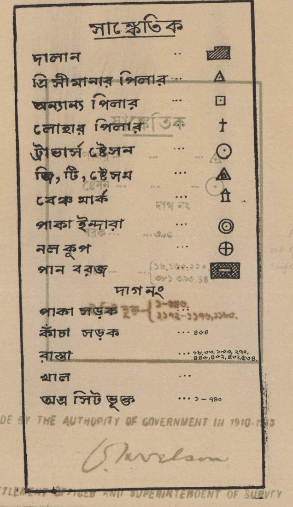
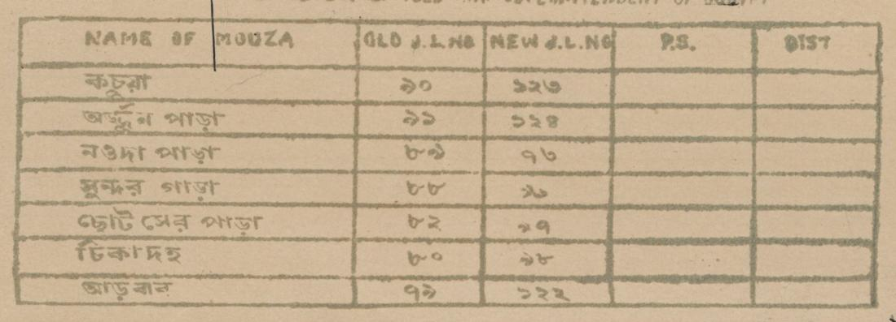
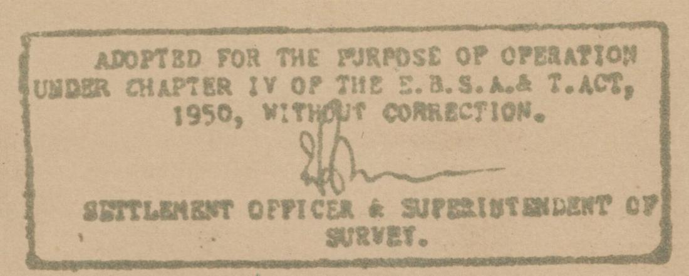

কচুয়া কারিগরপাড়া গ্রাম
আমাদের জমির কাগজ, সহজ বাংলায়
খতিয়ান, নামজারি, দলিল আর মৌজা ম্যাপ। জমির এই চারটি কাগজ একসাথে কীভাবে কাজ করে, আসল ম্যাপের ছবি দেখে বুঝে নিন।
বাড়ির ঠিকানা, মালিকের নাম, হাতবদলের প্রমাণ আর সরকারি খাতা। জমির কাগজও ঠিক তেমন। চারটি কাগজ মিলে একটি পুরো ছবি তৈরি করে।
জমিটি গ্রামের কোন জায়গায়, কোন দাগে, তার ছবি।
ওই দাগের জমি জরিপের সময় কার নামে লেখা হয়েছিল।
বিক্রি, দান বা ভাগের মাধ্যমে জমি কীভাবে হাত বদলাল তার প্রমাণ।
হাত বদলের পর সরকারি খাতায় নতুন মালিকের নাম তোলা।
সব জমির ঠিকানা বড় থেকে ছোট দিকে নামে। ডাকঘরের ঠিকানার মতোই এখানেও জেলা, থানা, মৌজা, তারপর দাগ। দাগ নম্বর দিয়েই ম্যাপের জমির সাথে খতিয়ানের হিসাব মেলে।
আসল ম্যাপে লেখা আছে জিলা রাজশাহী। তখন লালপুর থানা রাজশাহী জেলার অংশ ছিল। এখন লালপুর নাটোর জেলার উপজেলা। পুরনো কাগজ আর নতুন কাগজের নাম এ কারণেই আলাদা দেখায়।
খতিয়ান হলো মালিকের নামে সাজানো জমির খাতা। এক খতিয়ানে এক বা একাধিক দাগের জমি থাকতে পারে। জমি কেনা, বিক্রি, ঋণ আর মামলায় সবচেয়ে বেশি এই কাগজই দেখতে হয়।
একই জমির জন্য বিভিন্ন সময়ের খতিয়ান পাওয়া যায়।
ব্রিটিশ আমলের প্রথম পূর্ণাঙ্গ জরিপ। এই এলাকার ম্যাপে লেখা আছে ১৮৮৮–১৯৪০ সনে সরকারি ক্ষমতায় তৈরি। মালিকানার মূল সূত্র খুঁজতে সিএস খতিয়ান সবার আগে দেখা হয়।
১৯৫০ সালের রাষ্ট্রীয় অধিগ্রহণ ও প্রজাস্বত্ব আইনের পর হওয়া জরিপ (১৯৫৬–১৯৬২ )। জমিদারি ব্যবস্থা শেষ হওয়ার পর প্রজারা সরাসরি সরকারের প্রজা হিসেবে লেখা হন।
১৯৬৫ – ১৯৯০-এর দশক। স্টেট অ্যাকুইজিশন অ্যান্ড টেন্যান্সি অ্যাক্ট, ১৯৫০ (ধারা ১৪৪)। এসএ (SA) রেকর্ডের ভুল সংশোধন এবং মালিকানা মিউটেশন হালনাগাদ করা। বিংশ শতাব্দীর মাঝামাঝি সময়ের মালিকানা সংক্রান্ত আইনি বিরোধের ক্ষেত্রে এটি অত্যন্ত নির্ভরযোগ্য প্রমাণ হিসেবে গণ্য হয়।
সবচেয়ে নতুন জরিপ, ১৯৯৮ – বর্তমান। ভূমি জরিপ আইন / আধুনিক ডিজিটাল নির্দেশাবলি। ডিজিটাইজেশন, উচ্চ-নির্ভুল ম্যাপিং এবং নথিপত্র আধুনিকীকরণ। বর্তমান আইনি লেনদেন এবং ই-খতিয়ান ব্যবস্থার প্রধান নির্দেশক বা ভিত্তি। যা ২০০০-এর দশক থেকে বিভিন্ন এলাকায় চলছে এবং ডিজিটাল পদ্ধতিতে হচ্ছে। আপনার মৌজায় বিএস হয়েছে কি না, তা উপজেলা ভূমি অফিসে জেনে নিন।
নামজারির পর পাওয়া খতিয়ানকে বলা হয় মিউটেশন খতিয়ান বা পর্চা। এটি জরিপের খতিয়ান থেকে আলাদা, তাই কাগজে কোন ধরনের খতিয়ান দেখছেন তা সবসময় মিলিয়ে নিন।
| ১জেলা / থানা | রাজশাহী/লালপুর |
|---|---|
| ২মৌজা, জে.এল. | কচুয়া, ১২৩ |
| ৩মালিকের নাম | আবদুল করিম |
| ৪অংশ | ১৬ আনা (পূর্ণ মালিক) |
| ৫দাগ নং ও শ্রেণি | ৪৫২, ধানি |
| ৬জমির পরিমাণ | ৩৩ শতাংশ |
দলিল প্রমাণ করে আপনি জমি কিনেছেন। কিন্তু সরকারের খতিয়ানে তখনও আগের মালিকের নামই থাকে। নামজারি করলে সেই খাতা বদলে আপনার নাম বসে।
দলিলের কপি, খতিয়ান বা পর্চা, হালনাগাদ খাজনার রসিদ, জাতীয় পরিচয়পত্র আর ছবি।
অনলাইনে mutation.land.gov.bd সাইটে, অথবা ইউনিয়ন ভূমি অফিস ও ডিজিটাল সেন্টারের সাহায্যে।
ফি অনলাইনে জমা হয়। আবেদনের সময় সাইটে যে পরিমাণ দেখাবে সেটাই দেবেন, কারও হাতে বাড়তি টাকা নয়।
ভূমি অফিস জমি ও কাগজ যাচাই করে। সংশ্লিষ্ট সবাইকে নোটিশ দেওয়া হয়।
সহকারী কমিশনার (ভূমি) শুনানি নেন। কারও আপত্তি থাকলে এখানেই জানানো যায়।
আবেদন মঞ্জুর হলে আপনার নামে নতুন খতিয়ান তৈরি হয়।
ডিসিআর (খাজনার রসিদ) আর নতুন পর্চা সংগ্রহ করুন। এরপর প্রতি বছর নিজের নামে খাজনা দিন।
সরকারের নির্ধারিত সময়সীমা সর্বোচ্চ ২৮ দিন। নিয়ম বদলাতে পারে, তাই আবেদনের সময় অনলাইনে দেখা সময়টিই ধরুন।
নামজারির জন্য কাউকে বাড়তি টাকা দেবেন না। কোনো সমস্যা হলে উপজেলা ভূমি অফিসে বা অনলাইনে অভিযোগ জানান।
জমি বিক্রি, দান বা ভাগ করলে তা লিখে সাব-রেজিস্ট্রি অফিসে নিবন্ধন করতে হয়। নিবন্ধিত দলিলই আইনের চোখে সবচেয়ে শক্ত প্রমাণ।
দলিল লেখকের মাধ্যমে তফসিল, চৌহদ্দি, দাম লিখে নিন।
দাতা, গ্রহীতা ও সাক্ষী নিজে উপস্থিত থাকেন। পরিচয় যাচাই, ছবি ও আঙুলের ছাপ নেওয়া হয়।
জমির দাম ও এলাকা অনুযায়ী স্ট্যাম্প ও ফি লাগে। হার সাব-রেজিস্ট্রি অফিসে জেনে নিন।
দলিলের কপি হাতে পেয়ে নামজারির আবেদন করুন।
| ১দলিল নং ও সন | ৯৮৭৬ / ২০২৬ |
|---|---|
| ২দাতা ও গ্রহীতা | বিক্রেতা: আবদুল করিম ক্রেতা: সালমা বেগম |
| ৩তফসিল | থানা লালপুর, মৌজা কচুয়া, জে.এল. ১২৩, খতিয়ান ১২৩, দাগ ৪৫২, ৩৩ শতাংশ |
| ৪দাম | টাকা ... (কথায় ও অঙ্কে) |
| ৫চৌহদ্দি | উত্তরে রাস্তা, দক্ষিণে খাল, পূর্বে ও পশ্চিমে অন্যের জমি |
| ৬মালিকানার সূত্র | বিক্রেতা আগের কোন দলিল বা উত্তরাধিকারে জমি পেয়েছেন |
একটি একটি করে টিক দিন। সব ঘর টিক হলে ঝুঁকি অনেক কমে।
বড় অঙ্কের জমি কেনার আগে অভিজ্ঞ দলিল লেখক বা আইনজীবীর পরামর্শ নিন। এই সাইট শুধু সাধারণ ধারণা দেয়।
মৌজা ম্যাপ হলো পুরো মৌজার জমির নকশা। প্রতিটি ঘর একেকটি দাগ। নিচের ম্যাপটি কচুয়া মৌজার আসল ম্যাপ। লাল ঘরে চাপ দিলে সেই অংশ কী বোঝায় জানতে পারবেন।






ম্যাপের চার দিকের কিনারায় পাশের মৌজার নাম ও নম্বর লেখা থাকে। যেমন কচুয়ার পাশে সুন্দরগাড়া, অর্জুনপাড়া আর নওদাপাড়া। তাই জমির ঠিকানা মেলাতে সুবিধা হয়।
ম্যাপে লেখা: ১৬ ইঞ্চি = ১ মাইল। ১০০ কড়িতে ১ জরীপ (চেইন), ৮০ জরীপে ১ মাইল।
আপনি যদি ম্যাপে এক ইঞ্চি মাপেন, মাঠে তা প্রায় ৩৩০ ফুট। তবে ছাপা বা স্ক্যান করা ছবি ছোট বড় হলে এই হিসাব ঠিক থাকে না। সঠিক মাপের জন্য সরকারি সার্ভেয়ারের সাহায্য নিন।
খতিয়ানে শতাংশ বা একর, দলিলে কখনও কাঠা বা বিঘা লেখা থাকে। সংখ্যা বসান, সব মাপ একসাথে দেখুন।
যেকোনো ম্যাপে চাপ দিয়ে বড় করে দেখুন। বড় পর্দায় + বোতামে জুম করে দাগ নম্বর পড়া যায়।
এই ম্যাপগুলো ঐতিহাসিক জরিপের নকল। জমি কেনাবেচা বা মামলার কাজে সরকারি সত্যায়িত নকল জেলা রেকর্ড রুম থেকে নিতে হবে।
খাজনা দেওয়া, পর্চা তোলা, নামজারির আবেদনে সাহায্য।
সহকারী কমিশনার (ভূমি) নামজারির শুনানি ও অনুমোদন দেন।
দলিল নিবন্ধন ও দলিলের সত্যায়িত নকল।
সিএস, এসএ, আরএসের পুরনো খতিয়ান ও ম্যাপের নকল।